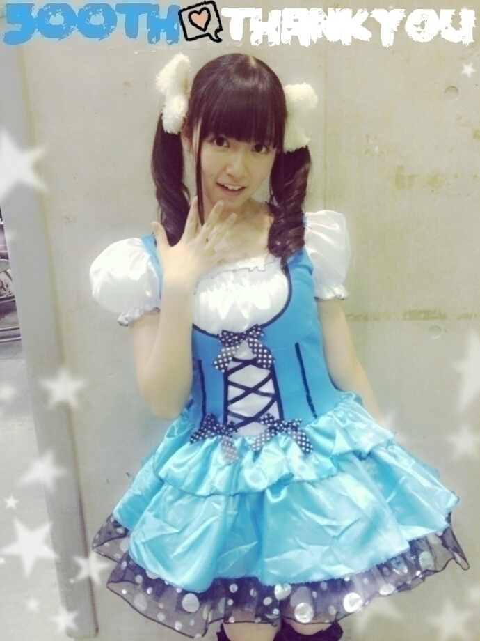
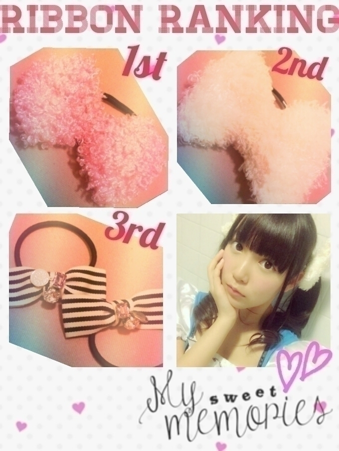
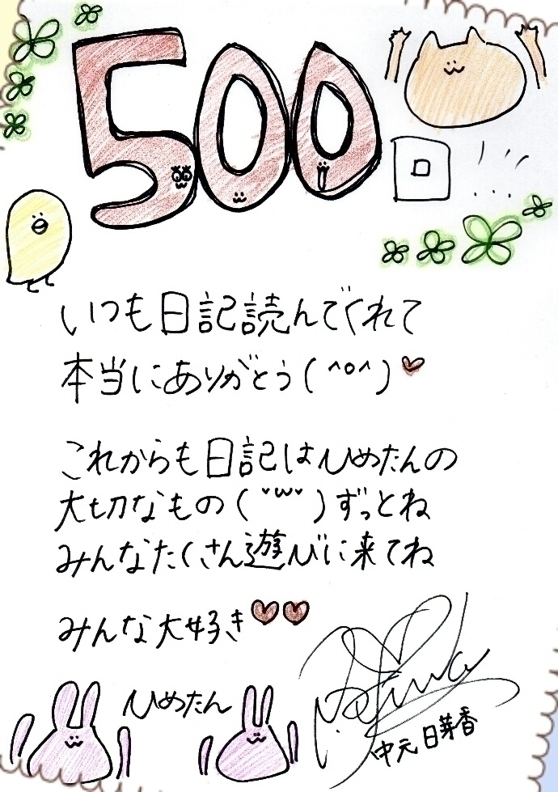

| 2014/11 21 Fri | ひめたん-OoO-その500 |

更新500回達成\( ˆoˆ )/
わーい！
みなさんいつも読んでくれてありがとう♡
コメント読むのが私の日課です
そんなわけでこれまで節目の時に
いろんなことやってきたけど
今回はめーるでみんなに助けを求めて
たくさん提案してもらったので
いろんなことしようと思いまーす( ^o^ )
＼着ぐるみcollection／

ちなみにここに載せてないやつで
個人的に買ったのが
あと3つあります♡
使い道？
パジャマしかないよね～
＼お気に入りのりぼんベスト3／

「My sweet memories」は
テンプレを引用したやつだから
どうぞ気にしないでください。笑
ちなみに現在コレクションは 124 個
1st......ぴんくもこもこ
多分これがコレクション第1号。
これからの季節にぴったり
2nd......しろもこもこ
いつかお話した、ままに捨てられたやつの
2代目です。これよく使う
3rd......ボーダー
ままが作ってくれたやつ。
のぎ天初回とかこれで出てます
＼新しい名札／

あのね、前回のやつが
お気に入りのひとは
それでもいいの(﹡ƠωƠ﹡)
でもね新しいの作ってってお声を
たくさんいただいたので
作ってみました♡
来年は未年だからめりりーぬさん
めりりーぬさん水色に塗ったのに
スキャンしたら消えたゃった
みんな好きな色塗って～
＼手書きメッセージ／

手書きメッセージは
ひめの案♡

 まいやんのあすなろ抱きどーでしたか？
まいやんのあすなろ抱きどーでしたか？
きゅんきゅんした(´pωq`)♡
陽菜ちゃんのあごクイ？も♡
スクフェスでUR持ってるー？？
リセットするまえは
にこちゃん持ってたんだけど
今はゼロ(´；_；｀)
SR真姫ちゃんを何故か
異常に持ってる。真姫ちゃーん
1枚目の写真のひめたん
きらきらしてる∑(ﾟДﾟ)
やっぱりひめは一般人とオーラが違うから
きらきらしちゃうんですか？
(きらきらのフレーム......)
中三組はみんな
頭が良いイメージがあるのは
自分の気のせいでしょうか？
お勉強がんばってる子の
集まりかもしれません(＊^ω^＊)
いや、別にひめたんは
お勉強好きでもないけども。
OLひめたんが職場にいたら
仕事に身に入らなくなりそうなくらい
可愛いかったです。是非、握手会でもw
お褒めの言葉をたくさん
ありがとうございます\( ˆoˆ )/
大丈夫、遠慮しときます\( ˆoˆ )/
いつもたくさんのコメント
ありがとうございます❁
リラックス法もいっぱい
教えてもらった(∗ ˊωˋ ∗)
癒しよかもんかもん
ひめたんの日記が癒しです～とか
メールが癒しです～とか
そんなこと言われてひめも癒された～
明日11/22 UTB発売！
よろしくお願いします♡
(＊´・ω・＊)
コメント(1482)
2014/11/21 23:42